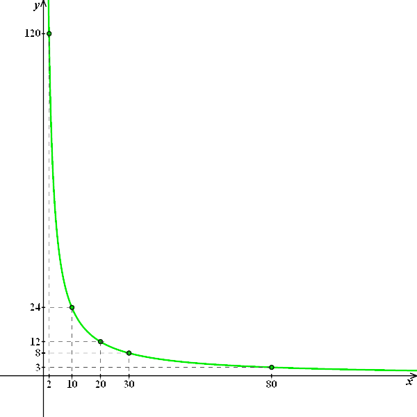

Motocyklista jadący z prędkością \(80 \frac{\text{km}}{\text{h}}\) pokonuje pewną
drogę w \(3\) godziny.
Wyznacz funkcję prędkości od czasu, a następnie naszkicuj jej wykres.
Zaczynamy od wyznaczenia wzoru funkcji. Wprowadźmy oznaczenia:
\( x \) - prędkość
\( y \) - czas
Korzystając z faktu, że
prędkość i czas są wielkościami odwrotnie proporcjonalnymi, zapisujemy równanie: \[x\cdot
y=80\cdot 3\] Wyznaczamy z tego równania niewiadomą \( y \): \[\begin{split}\quad \quad \quad
\quad x\cdot y&=240\quad \quad \quad //:x\\y&=\frac{240}{x}\end{split}\] Zatem szukany wzór
funkcji to: \[\begin{split}y&=\frac{240}{x}\end{split}\] Dla tak otrzymanego wzoru funkcji
wyznaczamy kilka punktów:
| \( x \) |
\( 2 \) |
\( 10 \) |
\( 20 \) |
\( 30 \) |
\( 80 \) |
| \( y=\frac{240}{x} \) |
\( 120 \) |
\( 24 \) |
\( 12 \) |
\( 8 \) |
\( 3 \) |
i rysujemy wykres:  Z wykresu (oraz z tabelki) możemy odczytać, że:
- z prędkością \( 2 \frac{\text{km}}{\text{h}} \) motocyklista będzie jechał \( 120 \)
godzin.
- z prędkością \( 10 \frac{\text{km}}{\text{h}} \) motocyklista będzie jechał \( 24 \)
godziny.
- z prędkością \( 20 \frac{\text{km}}{\text{h}} \) motocyklista będzie jechał \( 12 \)
godzin.
- z prędkością \( 30 \frac{\text{km}}{\text{h}} \) motocyklista będzie jechał \( 8 \)
godzin.